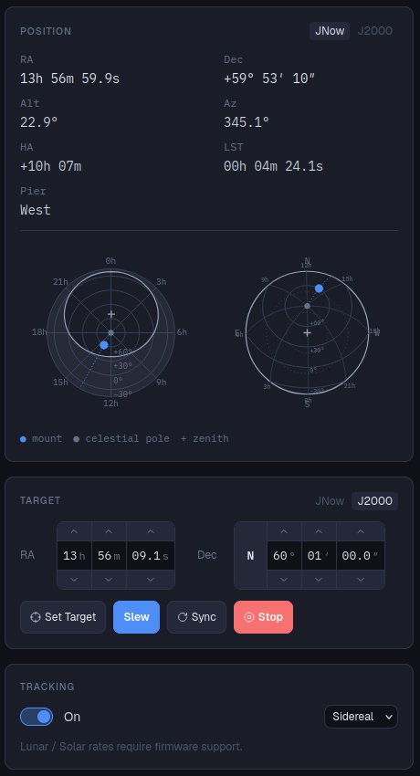
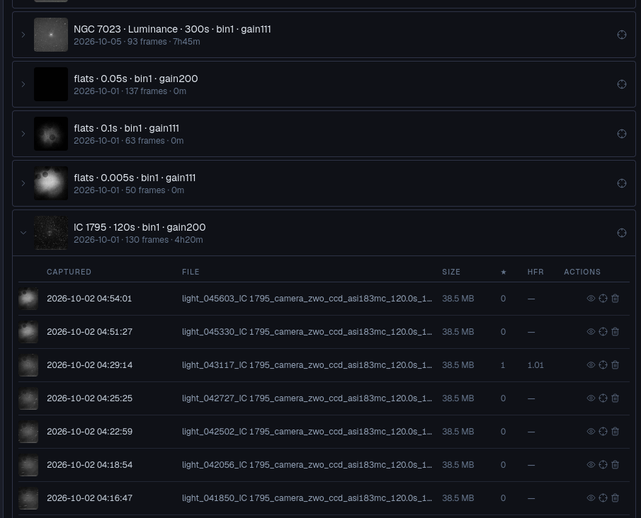
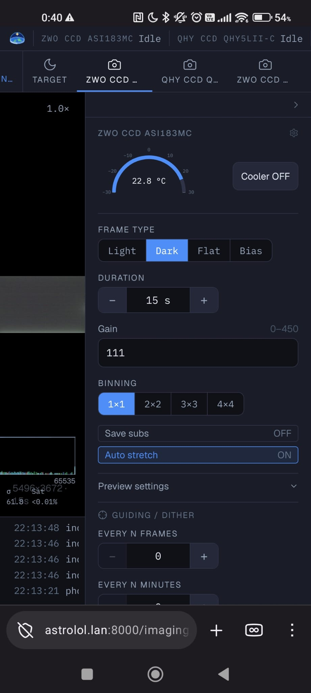
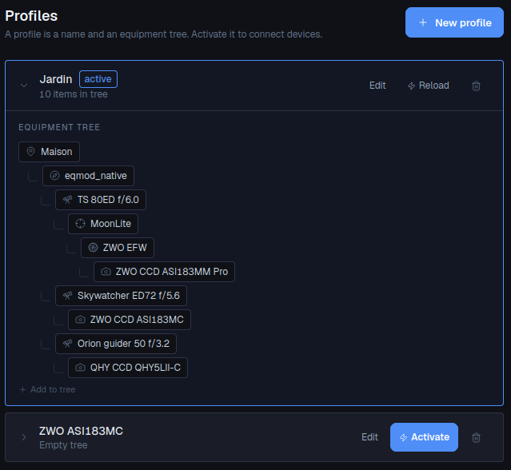

astrolol is a headless control platform for your imaging rig. It runs on a small Linux computer and you drive it from a laptop, tablet or phone on your network.
Device control, imaging, guiding and automation behind one event-driven backend, with a live view that stays in sync across every connected client.
astrolol remembers the devices (INDI or native) that are part of your profile and reconnects them automatically.
Astrolol supports taking pictures from many cameras at once, with synchronized dithering.
Guiding with PHD2 or the integrated guider module.
Queue a night's plan: target, slew, center, guide, dither, meridian flip and recover from the usual incidents.
Point SkySafari, Stellarium or Cartes du Ciel at astrolol and track the mount's position.
astrolol is completely designed over a plugin architecture, making it easy to extend it and implement new features or drivers.
Runs on a Raspberry Pi or any small Linux box bolted to the mount. 1GiB RAM recommended.
astrolol talks to INDI drivers out of the box, and has a native driver for Sky-Watcher EQMOD.
Open astrolol from a browser or from your phone.
Equipment control and your captures, wherever you check in from.




Every feature beyond the core device layer is a plugin — its own API, its own UI page, enabled per profile. These ship with astrolol today: